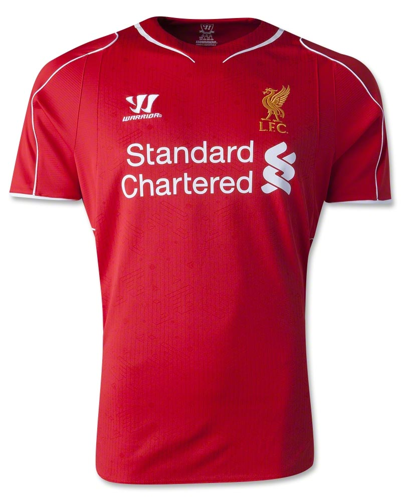
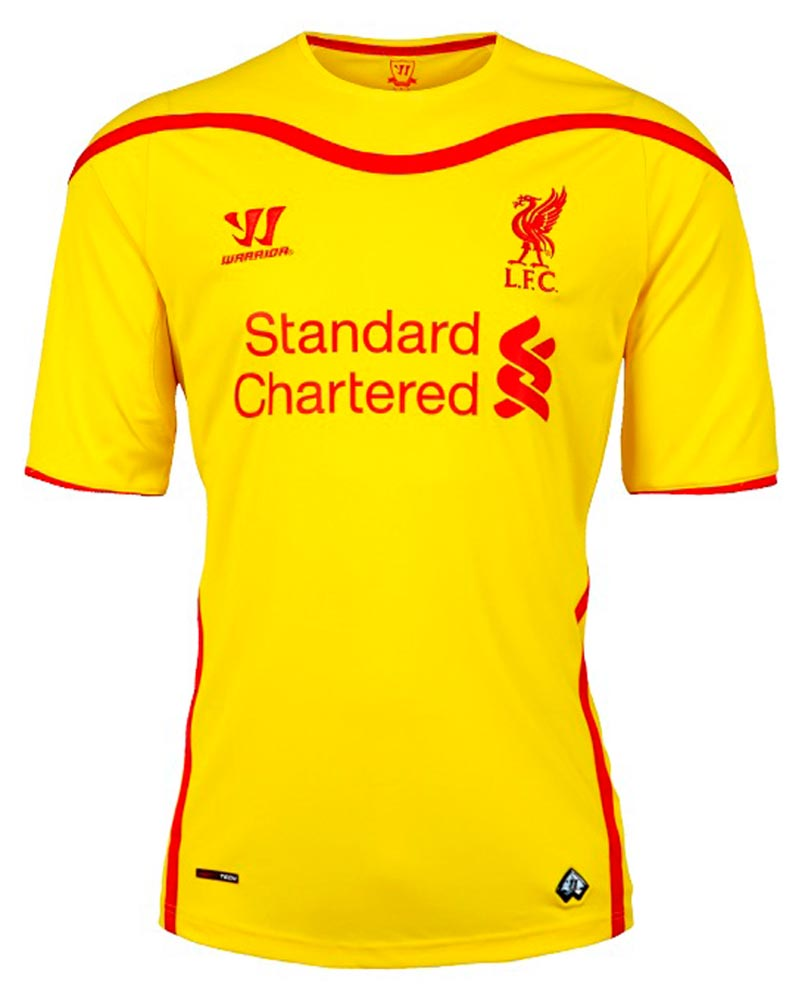
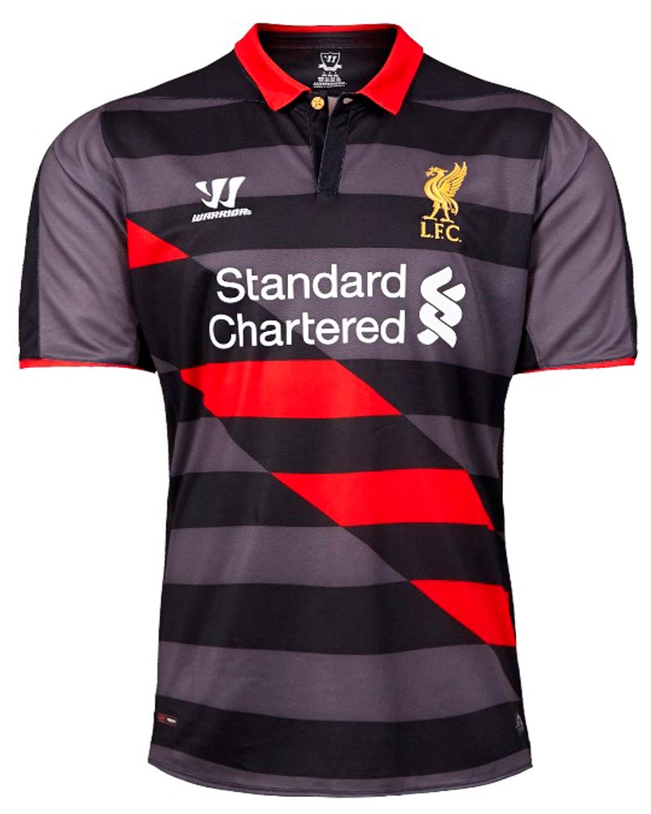

- Nathaniel Clyne #2
- Kolo Touré #4
- Dejan Lovren #6
- James Milner #7
- Christian Benteke #9
- Philippe Coutinho #10
- Roberto Firmino #11
- Jordan Henderson #14
- Daniel Sturridge #15
- Mamadou Sakho #17
- Alberto Moreno #18
- Adam Lallana #20
- Lucas Leiva #21
- Simon Mignolet #22
- Emre Can #23
- Joe Allen #24
- Divock Origi #27
- Danny Ings #28
- Jordon Ibe #33
- Martin Škrtel #37

- 1st kit -

- 2nd kit -

- 3rd kit -